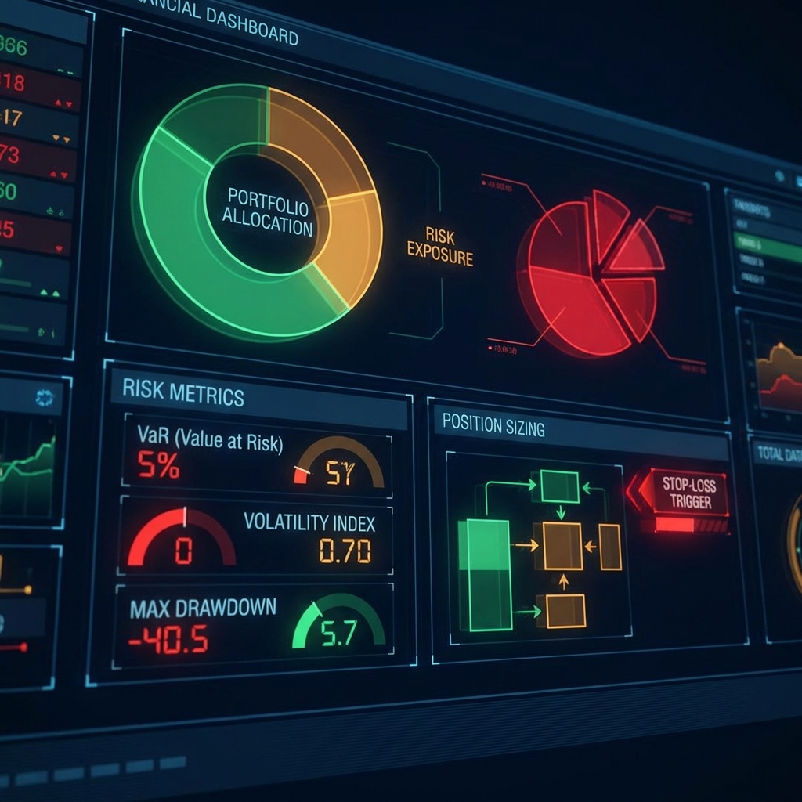

核心学习模块
深入探索每个关键领域
AI驱动
AI因子挖掘
利用机器学习技术自动发现和迭代优化交易因子，突破传统因子研究的局限。
- ✓ 自动特征工程
- ✓ 遗传算法优化
- ✓ 深度学习因子
- ✓ 实时因子更新
Scikit-learn
TensorFlow
AutoML

创新
情绪指标开发
通过爬虫技术抓取X(Twitter)和主流媒体资讯，构建实时市场情绪指标。
- ✓ Twitter情绪爬虫
- ✓ 新闻资讯抓取
- ✓ NLP情感分析
- ✓ 实时情绪追踪
Scrapy
BERT
Kafka
Python量化编程
系统学习Python编程，掌握数据处理、API调用和量化分析工具链。
- ✓ Python核心语法
- ✓ Pandas数据分析
- ✓ 交易所API接入
- ✓ 数据可视化
Pandas
NumPy
Matplotlib
策略开发与回测
构建完整的策略开发流程，从想法到验证的全链条实现。
- ✓ 回测引擎搭建
- ✓ 性能指标分析
- ✓ 参数优化
- ✓ 稳健性检验
Backtrader
Zipline
PyAlgoTrade

风险管理
学习专业的风险控制技术，保护你的交易资本。
- ✓ 仓位管理
- ✓ VaR计算
- ✓ 最大回撤控制
- ✓ Kelly准则
Risk Metrics
Portfolio
Optimization
数学与统计基础
掌握量化交易背后的数学原理和统计学方法。
- ✓ 概率论基础
- ✓ 时间序列
- ✓ 统计推断
- ✓ 优化理论
Statistics
Time Series
Calculus